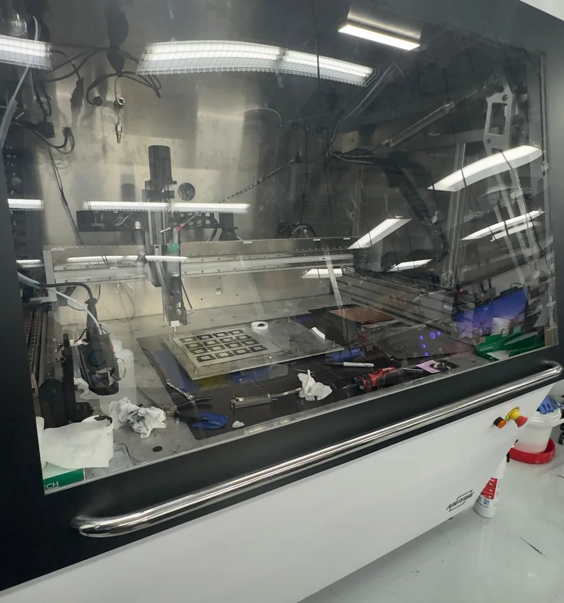
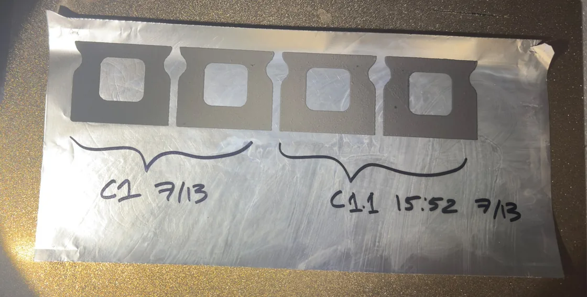
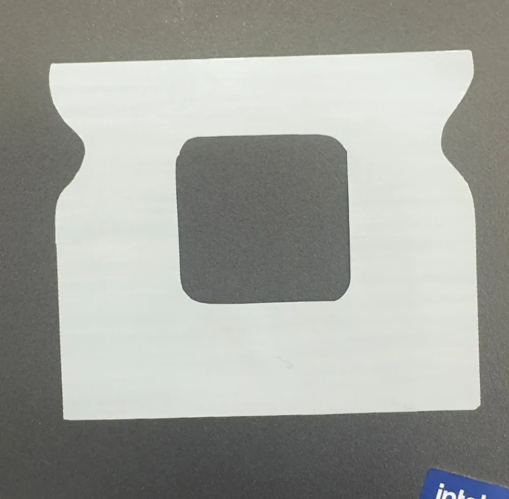
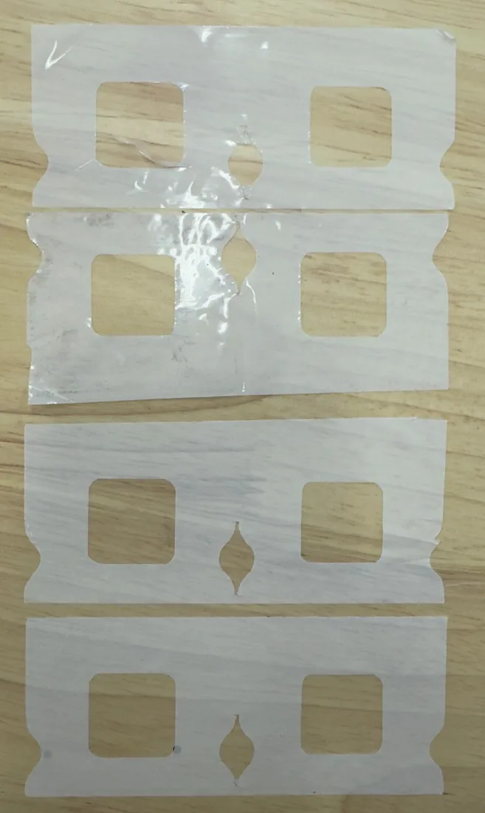
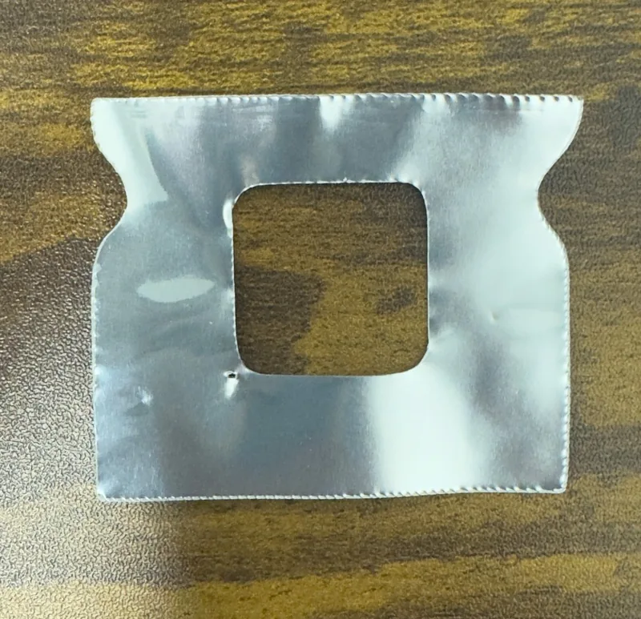
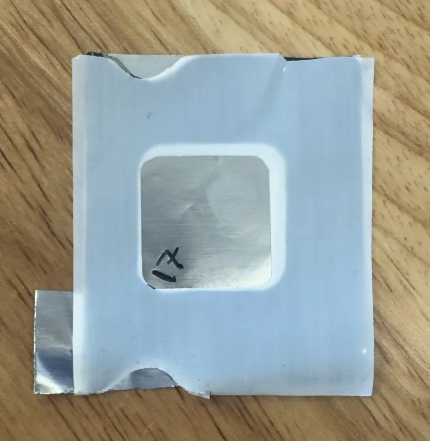
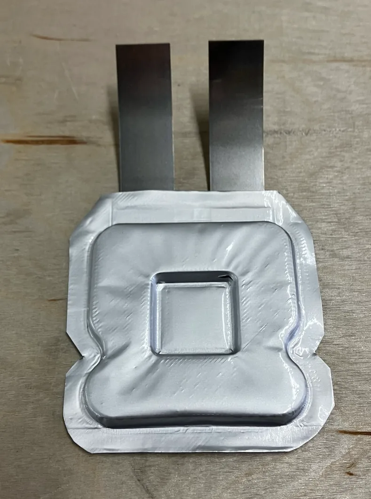

Printing the electrodes
At MATERIAL Hybrid Manufacturing, I worked on the production of both anodes and cathodes. I developed printer calibration procedures that achieved 10 µm precision at production scale. The photos show the enclosed printer and samples from two print runs. Each print has a central opening that also appears in the separator.




Cutting the separators
The white material in these photos is the separator that sits between the electrodes. I designed and validated a method for cutting its center window, outside edges, and side notches. I wrote the standard operating procedure the team adopted. The new method cut setup time by 60% and reduced material waste.




From individual layers to a cell
The cutouts below show the same profile at two stages. In the layered sample, metal is visible through the window in the white separator. I helped assemble both single- and multilayer cells and contributed to 90% of the team’s usable output during my internship.





